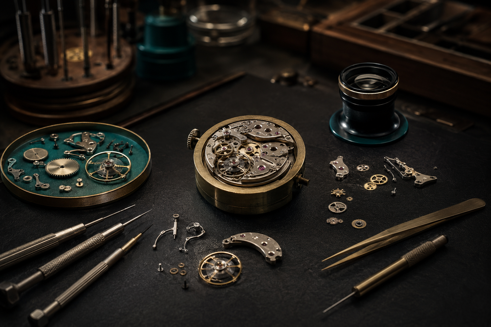

Clarity over hype
We explain what a feature changes in real use, including its limits.
THE EDITORIAL HOUSE
WHY WE EXIST
Iconic Clockwork Avenue is an independent demonstration journal for people who enjoy watches as designed objects, mechanical systems and daily companions. We translate specialist detail into decisions a thoughtful owner can actually use.
Our references are fictional editorial studies. They allow us to discuss proportion, movement architecture and ownership without pretending that price or prestige guarantees quality.
We explain what a feature changes in real use, including its limits.
We prefer a small coherent collection to accumulation without direction.
Maintenance and long ownership are part of good design.

OUR METHOD
Each guide moves from visible design to underlying engineering and finally to practical experience. That sequence keeps technical knowledge connected to real choices.